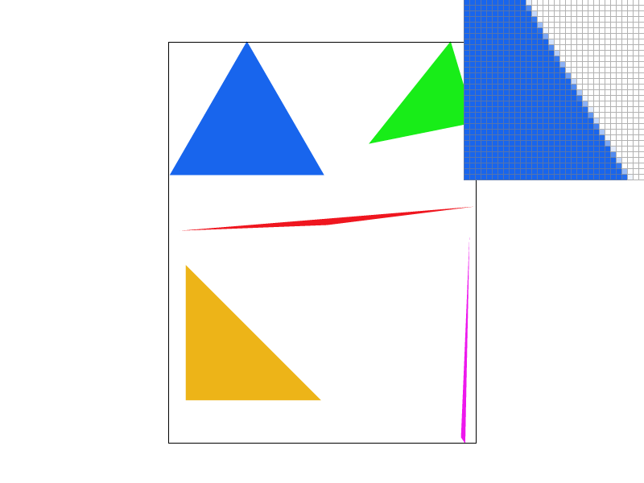

CS184/284A Spring 2025 Homework 1 Write-Up
Link to webpage: cal-cs184-student.github.io/hw-webpages-aidenjw/hw1/index.html
Link to GitHub repository: github.com/cal-cs184-student/hw-webpages-aidenjw
Overview
In this homework, we built a rasterizer that takes in SVG primitives and turns them into pixels, adding features that improved the functionality. We started with a rasterizer that could draw single-color triangles, then implemented supersampling to achieve antialiasing by making the triangle edges noticeable smoother. We then applied transforms to pose and recolor Cubeman, teaching us pivot placement and matrix composition for hierarchical modeling. We then implemented barycentric coordinates as a tool for interpolating attributes per pixel accross a triangle. Using this, we texture mapping with pixel sampling and a mipmap-based level sampling. This helped reduce aliasing due to minification. This homework was extremely intimidating at first, especially since we didn't have much prior experience with computer graphics. However having the assignment broken down into smaller steps made it much easier to focus and work through the problems, and also helped us see how each feature connected with or built upon others. After completing this assignment, it makes sense on why we need many different antialiasing techniques, as working on the implementations made us realize how each "solution" would only address a specific type of aliasing.
Task 1: Drawing Single-Color Triangles
Overview
In this task, I implemented basic triangle rasterization without supersampling. The goal was to determine which pixels are covered by a given triangle and color those pixels appropriately.
My implementation follows a standard bounding-box and edge-function approach. For each triangle, I:
- Compute its axis-aligned bounding box.
- Iterate over all pixel centers inside that bounding box.
- Use edge functions to determine whether each sample lies inside the triangle.
- Fill the pixel if the sample is inside.
Bounding Box Computation
Given triangle vertices \((x0, y0), (x1, y1), (x2, y2)\), I first compute the smallest axis-aligned rectangle that fully contains the triangle:
- \(min_x = floor(min(x0, x1, x2))\)
- \(max_x = ceil(max(x0, x1, x2))\)
- \(min_y = floor(min(y0, y1, y2))\)
- \(max_y = ceil(max(y0, y1, y2))\)
I then clamp these bounds to the framebuffer dimensions \([0, width-1]\) and \([0, height-1]\) to avoid out-of-bounds access.
Edge Function and Point-in-Triangle Test
To determine whether a sample lies inside the triangle, I use an edge function:
E(a, b, p) = (p - a) × (b - a)This is the 2D cross product. The sign indicates which side of the directed edge \(a → b\) the point \(p\) lies on:
- \(E > 0\): point is on the left side
- \(E < 0\): point is on the right side
- \(E = 0\): point lies on the edge
To handle both clockwise and counter-clockwise vertex orderings, I compute the signed double-area:
area2 = E(v0, v1, v2)- \(area2 > 0\): counter-clockwise
- \(area2 < 0\): clockwise
- \(area2 = 0\): degenerate triangle (skip)
A point is inside the triangle if it lies consistently on the inner side of all three edges, depending on the sign of \(area2\).
Rasterization Loop
For every integer pixel coordinate \((x, y)\) inside the bounding box:
- Sample at the pixel center \((x + 0.5, y + 0.5)\).
- Evaluate the three edge functions.
- If inside, call
fill_pixel(x, y, color).
Correctness and Complexity Analysis
Correctness. The algorithm first computes the triangle’s axis-aligned bounding box, which is guaranteed to contain the entire triangle. Therefore, any pixel whose center could be inside the triangle must lie within this box, and it is sufficient to only test samples in this region.
For each pixel \( (x, y) \) in the bounding box, the algorithm samples at the pixel center \( (x + 0.5,\, y + 0.5) \) and evaluates three edge functions—one per triangle edge. Each edge function corresponds to a half-plane test: it returns a signed value indicating whether the sample lies to the left or right of a directed edge. A point is inside the triangle if it lies on the “inside” side of all three edges. To support both clockwise and counter-clockwise vertex orderings, the code checks the sign of the triangle’s signed area and consistently uses either \( \ge 0 \) or \( \le 0 \) for all three edges. This ensures that pixels are filled exactly when their centers lie inside (or on the boundary of) the triangle.
Degenerate triangles (zero area) are handled explicitly by early return, preventing undefined behavior and ensuring correctness in edge cases.
Complexity. Let the bounding box have width \(W\) and height \(H\). The algorithm iterates over every integer pixel coordinate in this rectangle, performing a constant amount of work per pixel: three edge-function evaluations (each consisting of a small fixed number of multiplies/adds) and a few comparisons. Therefore, the total work per triangle is proportional to the number of pixels in the bounding box:
\( \Theta(W \cdot H) \)
This is asymptotically no worse than any approach that “checks each sample within the bounding box,” since such approaches must also visit \(W \cdot H\) samples and do at least constant work per sample. The only additional overhead here is the constant-time setup (bounding-box computation, clamping, and a single signed-area computation), which does not change the overall runtime.
Optimizations Beyond Basic Bounding-Box Rasterization
In addition to the standard bounding box and per-pixel inside test approach, I implemented a scanline rasterizer that reduces unnecessary work on pixels that are inside the triangle’s bounding box but outside the triangle itself.
1) Scanline Span Filling (Primary Optimization)
A basic triangle rasterizer computes the triangle’s axis-aligned bounding box and then, for every pixel center in that box, evaluates three edge functions to test whether the sample lies inside the triangle. This can waste a significant amount of work when the triangle occupies only a small fraction of its bounding box (e.g., thin or diagonal triangles).
Instead, my implementation rasterizes the triangle one scanline at a time. For each integer screen row \(y\), I sample at the pixel-center y-coordinate \(s_y = y + 0.5\) and compute the intersection between the horizontal line at \(s_y\) and the triangle’s edges. These intersections produce (up to) two x-coordinates, which define a single contiguous covered interval \([x_L, x_R]\) on that scanline. I then fill only the pixels whose centers lie within that span.
2) Half-Open Rule for Robust Edge/Vertex Handling
To avoid double-counting intersections at shared vertices (which can happen when a scanline passes exactly through a vertex), I use a half-open y-interval rule for each edge: the scanline intersects an edge only when \(s_y\) lies in \([y_{\min}, y_{\max})\). Additionally, horizontal edges are ignored during intersection. This combination ensures that each scanline typically yields exactly two valid intersections and avoids cracks or double-filled rows at triangle boundaries.
Timing Comparison (Averaged Over 3 Trials)
To quantify the performance improvement, I measured the average time per triangle (in nanoseconds) for both the baseline bounding-box rasterizer (per-pixel edge tests) and the optimized scanline span-filling implementation.
Each configuration was run over 3 trials, and I report the mean time per triangle along with the standard deviation to reflect variability between runs.
| Task | Triangles | Baseline Mean (ns/triangle) | Baseline Std Dev | Optimized Mean (ns/triangle) | Optimized Std Dev |
|---|---|---|---|---|---|
| 3 | 1800 | 2106.75 | 90.96 | 491.16 | 98.49 |
| 4 | 5 | 77655.67 | 6565.96 | 37947.27 | 409.48 |
| 5 | 6 | 175592.67 | 17091.72 | 75865.70 | 3489.67 |
| 6 | 120 | 5238.05 | 217.34 | 2031.47 | 47.04 |
The results show a consistent performance improvement across all tasks. The relatively small standard deviations indicate stable performance across trials. The scanline span-filling method significantly reduces unnecessary per-pixel edge tests inside the bounding box.
Task 2: Antialiasing by Supersampling
Supersampling is useful because it gives a better estimate of a pixel's true color by sampling multiple locations inside the pixel and averaging them. This matters most for high-frequency content, especially triangle edges. On these edges, with only one sample per pixel, many pixels on the boundary of the edge flip between being inside and outside the triangle, causing aliasing. With more samples per pixel (supersampling), the boundary pixels become partially covered, so their averaged color becomes a smoother blend, making the edges appear smoother.
To implement supersampling, I rasterized primitives into a higher-resolution sample buffer rather than writing directly to the framebuffer. This sample buffer is treated as a virtual framebuffer of size width * n by height * n. In rasterize_triangle, I evaluated coverage at each subsample location, and if the subsample lies inside the triangle, I wrote the color to the corresponding position in sample_buffer. For points and lines, I modified fill_pixel() to fill all subsamples of a pixel with the same color so that they rendered correctly without implementing antialiasing. After rasterization, resolve_to_framebuffer() averaged the n x n subsamples for each pixel and wrote the averaged color to the actual framebuffer. This allows edges of triangles to be blurred, visualizing the partial coverage of boundary pixels and acting as an antialiasing filter.
|
|
|
|

|
Task 3: Transforms
For this task, I posed Cubeman in a jumping jack position: arms raised out to the sides and legs spread wide.
I also recolored Cubeman: a two-tone steel-blue torso, a gold diamond head with a cyan visor accent, teal arms, and crimson legs. Each body part uses a darker and lighter triangle for the same polygon shape.
The key challenge was rotating each limb around its joint rather than its center.
Since SVG rotations pivot around the current local origin, I first
translate() to the joint position, then rotate(), then place
the segment geometry offset from that pivot. For example, the hip joint sits at
y = 60 because the upper-leg segment is centered at y = 90
with a half-height of 30 (derived from scale(0.2, 0.6) on a ±50 unit
square), so the top of the segment (the hip) lands at 90 − 30 = 60.
The same logic horizontally gives the shoulder at x = ±60 for the arms.
With the pivots correctly placed, the left leg rotates +35° and the right
leg −30°, spreading the legs outward from the body's center line. The arms
mirror this symmetry: the left arm rotates +35° and the right arm
−35°, angling both upward and away from the torso. The result is a
bilaterally symmetric pose that reads immediately as a jumping jack mid-motion.
Extra Credit: Viewport Rotation (GUI Feature)
Feature Overview
For the extra credit, I added a viewport rotation feature to the GUI. Using two previously unused keys, the user can rotate the entire view of the SVG canvas in fixed increments.
- [ rotates the viewport counterclockwise by 5 degrees
- ] rotates the viewport clockwise by 5 degrees
Implementation Details
1) Adding new keybindings
I implemented the new controls in DrawRend::keyboard_event. On key press, I update a member variable
viewport_deg and trigger a redraw:
case '[':
viewport_deg += 5.0f;
redraw();
break;
case ']':
viewport_deg -= 5.0f;
redraw();
break;2) Modifying the SVG → NDC → Screen transform
The core idea is that the renderer already uses a matrix stack to map SVG coordinates to screen coordinates:
screen_pos = ndc_to_screen * svg_to_ndc * svg_pos
I inserted an additional viewport rotation matrix between ndc_to_screen and
svg_to_ndc. This makes the rotation act in NDC space, meaning it rotates the entire
normalized view (the \([0,1]^2\) canvas) rather than rotating individual SVG objects.
A direct rotation in NDC would rotate about the origin (0,0), which would swing the image out of view. To rotate about the center of the viewport instead, I used the standard pivot trick:
\[ M_{\text{viewport}} = T(0.5, 0.5)\; R(\theta)\; T(-0.5, -0.5) \]
This translates the NDC center to the origin, rotates by \(\theta\), and then translates back. In code, I constructed:
Matrix3x3 viewport_rot =
translate(0.5f, 0.5f) *
rotate(viewport_deg) *
translate(-0.5f, -0.5f);Then I applied it in the draw call:
svg.draw(software_rasterizer, ndc_to_screen * viewport_rot * svg_to_ndc[current_svg]);3) Rotating the canvas outline consistently
The canvas outline is drawn manually using line rasterization. To keep the outline aligned with the rotated viewport, I applied the same matrix stack to the four SVG-space corners. This ensures both the scene and the border are transformed identically, so the border continues to correctly frame the SVG canvas even as the view rotates.
Results
Task 4: Barycentric coordinates
Barycentric coordinates are a way of expressing any point inside a triangle as a weighted combinationof the triangle's 3 vertices. Given a triangle with vertices \((v0, v1, v2)\), any point \(p\) can be represented as: p = w0 * v0 + w1 * v1 + w2 * v2 where \(w0, w1, w2\) are the barycentric coordinates that sum to 1, and with all weights being non-negative for points inside the triangle. These 3 weights tell us how close the point is to each of the vertices, allowing us to interpolate attributes such as color from the triangle vertices. In this image, the area near the red vertex appears mostly red, and similarly for the other colors/vertices. The center is a blend of red, green, and blue, as it is a mix of all 3 vertices. This is since the closer we are to a given vertex, the larger the weight corresponding to that vertex is in barycentric coordinates, and thus the larger the contribution of that vertex's color to the final interpolated color at that point. The center of the triangle is an even blend of all 3 vertices as all 3 weights are equal, and points on any of the 3 vertices are the pure color of that vertex, as its weight for that verex is 1 and all other weights 0.

Task 5: "Pixel sampling" for texture mapping
Overview: What is pixel sampling?
In texture mapping, each fragment (pixel sample) on the screen corresponds to a continuous texture coordinate \( (u, v) \) in the range \([0,1]\times[0,1]\). The texture image, however, is stored as a discrete grid of texels. Pixel sampling is the process of converting a continuous \( (u, v) \) coordinate into a color by reading one or more nearby texels. The choice of sampling method determines how sharp or smooth the final textured result appears, especially when the texture is magnified or minified.
How I implemented pixel sampling
In my implementation, Texture::sample selects a pixel sampling method based on sp.psm.
For this task I used mip level 0 (base level) and focused on pixel sampling behavior:
Color Texture::sample(const SampleParams& sp) {
int level = 0;
if (sp.psm == P_NEAREST) {
return sample_nearest(sp.p_uv, level);
} else { // P_LINEAR
return sample_bilinear(sp.p_uv, level);
}
}Both sampling routines clamp \(u\) and \(v\) to \([0,1]\) to avoid out-of-bounds accesses, convert the continuous coordinates into texel-space coordinates, and then read texel values from the selected mip level.
Nearest Neighbor Sampling
Nearest neighbor sampling chooses the single texel whose center is closest to the continuous coordinate \( (u, v) \). Conceptually, it rounds to the nearest integer texel index and returns that texel’s color.
Implementation details:
- Clamp \(u,v\) into \([0,1]\).
- Map to texel coordinates: \(x = u\cdot(\text{width}-1)\), \(y = v\cdot(\text{height}-1)\).
- Round \(x,y\) to the nearest integer texel indices.
- Clamp indices to valid ranges and fetch the texel.
int tx = (int)round(u * (mip.width - 1));
int ty = (int)round(v * (mip.height - 1));
return mip.get_texel(tx, ty);Nearest sampling is very fast and preserves hard edges, but it often produces visible “blocky” artifacts when a texture is magnified, since each pixel can abruptly switch between texels.
Bilinear Sampling
Bilinear sampling smooths these transitions by interpolating between the four texels surrounding the continuous coordinate. Instead of picking one closest texel, it computes a weighted average based on how close \( (u, v) \) is to each texel corner in texel space.
Implementation details:
- Clamp \(u,v\) into \([0,1]\).
- Compute continuous texel-space position: \(x = u\cdot(\text{width}-1)\), \(y = v\cdot(\text{height}-1)\).
- Compute the surrounding integer texel indices: \(x_0=\lfloor x\rfloor\), \(x_1=\min(x_0+1,\text{width}-1)\), and similarly for \(y_0,y_1\).
- Compute interpolation weights: \(s_x = x-x_0\), \(s_y = y-y_0\).
- Fetch \(c_{00},c_{10},c_{01},c_{11}\) and interpolate first in x, then in y.
Color c0 = c00 * (1.0f - sx) + c10 * sx;
Color c1 = c01 * (1.0f - sx) + c11 * sx;
return c0 * (1.0f - sy) + c1 * sy;Pixel Sampling Comparison (Nearest vs. Bilinear)
Chosen Example Region
To find a clear case where bilinear sampling outperforms nearest sampling, I used the pixel inspector on
svg/texmap/test4.svg and zoomed into the parrot texture. I specifically focused on the parrot’s
black eye stripes, since they contain thin, high-contrast details (dark lines adjacent to bright colors)
that are very sensitive to how texture lookups are filtered during magnification.
Screenshots
Below are four screenshots of the same zoomed-in region (parrot eye stripes) under different settings:
- Nearest sampling, 1 sample per pixel (1 spp)
- Nearest sampling, 16 samples per pixel (16 spp)
- Bilinear sampling, 1 sample per pixel (1 spp)
- Bilinear sampling, 16 samples per pixel (16 spp)

Relative Differences
- Nearest sampling produces a visibly blocky/pixelated appearance in the stripes. Because nearest sampling chooses a single closest texel per lookup, small changes in screen position can cause sudden jumps between texels. This creates harsh stair-step transitions and makes thin stripes look chunky.
- Bilinear sampling makes the stripes look smoother and more continuous. Since bilinear sampling interpolates between the four surrounding texels, the transition between dark stripe texels and nearby lighter texels is blended rather than abruptly switching. This reduces visible texel boundaries and preserves the perceived shape of the thin stripe details during magnification.
Changing the supersample rate (1 spp to 16 spp) affects a different kind of aliasing:
- Increasing to 16 spp primarily improves edge aliasing (i.e., jagged boundaries of polygons/triangles), because it averages multiple subpixel samples per pixel.
- However, supersampling does not eliminate the blockiness of nearest texture filtering. In the nearest 16 spp screenshot, the triangle edges may look smoother than nearest 1 spp, but the parrot’s stripe texture still shows discontinuous texel steps because each lookup still snaps to a single texel.
- The best result is bilinear at 16 spp, which combines smoother texture interpolation (bilinear) with reduced geometric aliasing (supersampling). This makes both the stripe details and nearby edges appear cleaner.
When the difference is large (and why)
The difference between nearest and bilinear sampling is largest when the texture contains high-frequency detail (thin lines, sharp contrast boundaries, small patterns) and the texture is being magnified on screen. In these cases, a single pixel may map to a texture coordinate that lies between multiple texels, and nearest sampling will group to one texel, creating blocky images.
Bilinear sampling reduces this because it approximates the underlying continuous image by blending between neighboring texels. This produces smoother intensity transitions and prevents abrupt changes in appearance as the sampling location moves slightly across the texture.
In contrast, if the texture is very smooth/low-frequency (gradients, large uniform regions), or if the texture is close to 1:1 mapping with screen pixels, the difference between nearest and bilinear will be much smaller because adjacent texels are already similar and snapping between them is less noticeable.
Task 6: "Level Sampling" with mipmaps for texture mapping
Level sampling is choosing which mipmap level of a texture to use when drawing a textured triangle. Mipmaps are the precomputed, downsampled copies of a texture. They are used to improve performance and reduce aliasing when textures are minified, as rather than downsampling the original texture or simply using the original texture, we just look up the corresponding level in the mipmap. However it is often difficult to determine which mip level to use, which is where level sampling comes in.
For my implementation, for each pixel center in the textured triangle, I computed the barycentric coordinates and used them to interpolate the UV coordinates (p.uv) at that pixel. I then computed the UV at points 1 unit offset in the x and y directions from p.uv to estimate the derivative of the UV coordinates. I then scaled these derivatives by the texture size to convert to texel units, and took the maximum of the absolute values of the x and y derivatives, taking the log of that maximum as in lecture to compute the mip level. For L_NEAREST, the mip level is simply rounded to the nearest mip level. For L_LINEAR, I used the fractional part of the mip level as the interpolated weight between the 2 nearest mip levels, and interpolated the sampled colors from these 2 mip levels.
Pixel sampling affects how we sample within a chosen mip level (or level 0 if not using mipmaps). It is the cheapest option in terms of performance, as P_NEAREST requires only 1 texel fetch. P_LINEAR is slightly more expensive with 4 texel fetches and interpolation while reducing aliasing by smoothing transitions. Both require no additional memory, and P_LINEAR helps mainly with aliasing due to magnification.
Level sampling is slightly more computationally expensive than nearest pixel sampling as it requires computing the mipmap level and potentially sampling from 2 mip levels (depending on type of level sampling used). It also requires significatn extra memory to store the mipmap. However it is very effective at reducing aliasing due to minification, or shimmering/moire due to shrinking textures on the screen.
Number of samples per pixel, or supersampling is often the slowest (dependent on the sample rate). This is because it requires first rasterizing the triangle at a higher resolution, making the algorithm iterate over significantly more pixels. It also has the largest increase in memory usage as the sample buffer scales with the sample rate. It has the antialiasing benefit of smoothing jagged edges of triangles, though does not help with texture aliasing.